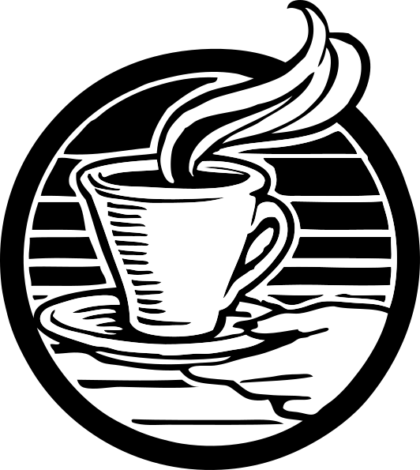

En Retro Café ofrecemos granos de alta calidad, seleccionados y preparados por baristas expertos. Ven a disfrutar de un ambiente cálido, música suave y el aroma irresistible del café recién molido.

La vida es un poco mejor con café
En Retro Café ofrecemos granos de alta calidad, seleccionados y preparados por baristas expertos. Ven a disfrutar de un ambiente cálido, música suave y el aroma irresistible del café recién molido.